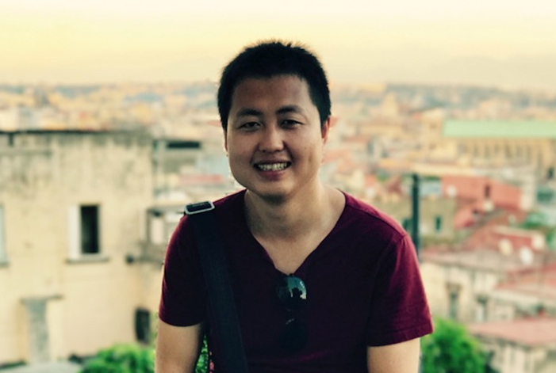

<td align="center" class="tbcolor10" colspan="2" valign="top">
<table border="0" cellpadding="0" height="100%" width="100%">
<tbody><tr><td align="right" height="35px" style="font-size:9pt">
<a href="javascript:window.close()" title="关闭本窗口">关闭窗口</a>｜<a href="print.asp?id=544772" target="_blank" title="打印本页内容">打印张贴版</a>    

</td></tr>
<tr>
<td align="center" height="500" valign="top">
<table border="0" cellpadding="4" cellspacing="0" height="100%" style="border-collapse: collapse;word-break:break-all;" width="86%">
<tbody><tr>
<td align="center" height="80px"><span style="font-family:方正小标宋简体;font-size: 25px;color: #C70E5C"><b><font color="black">讲座预告 | 华南师范大学副研究员王本驰博士学术讲座</font></b></span></td>
</tr>
<tr>
<td align="center" height="50px" style="font-size: 9pt"><font color="#808080">心理学院　2025/4/7 12:41:00</font><br/> 
<font color="#F8F8F8" style="font-size:9pt">（钟沛基 2022280095）</font></td>
</tr>
<tr>
<td height="300" valign="top">
<p class="MsoNormal" style="text-align: center; "></p><p class="MsoNormal" style="tab-stops:63.8pt 241.0pt 276.45pt 11.0cm 347.3pt 375.65pt 15.0cm"><b><span style='mso-bidi-font-size:8.0pt;font-family:宋体;mso-ascii-font-family:"Times New Roman";
mso-hansi-font-family:"Times New Roman";mso-ansi-language:EN-US;mso-fareast-language:
ZH-CN'>讲座名称：</span></b><span lang="EN-US" style="mso-bidi-font-size:8.0pt;
mso-ansi-language:EN-US;mso-fareast-language:ZH-CN">Tracking salient
distractors and learning to suppress them<o:p></o:p></span></p>
<p class="MsoNormal" style="tab-stops:63.8pt 241.0pt 276.45pt 11.0cm 347.3pt 375.65pt 15.0cm"><b><span style='mso-bidi-font-size:8.0pt;font-family:宋体;mso-ascii-font-family:"Times New Roman";
mso-hansi-font-family:"Times New Roman";mso-ansi-language:EN-US;mso-fareast-language:
ZH-CN'>讲座时间：</span></b><span lang="EN-US" style="mso-bidi-font-size:8.0pt;
mso-ansi-language:EN-US;mso-fareast-language:ZH-CN">2025</span><span style='mso-bidi-font-size:8.0pt;font-family:宋体;mso-ascii-font-family:"Times New Roman";
mso-hansi-font-family:"Times New Roman";mso-ansi-language:EN-US;mso-fareast-language:
ZH-CN'>年</span><span lang="EN-US" style="mso-bidi-font-size:8.0pt;mso-ansi-language:
EN-US;mso-fareast-language:ZH-CN">4</span><span style='mso-bidi-font-size:8.0pt;
font-family:宋体;mso-ascii-font-family:"Times New Roman";mso-hansi-font-family:
"Times New Roman";mso-ansi-language:EN-US;mso-fareast-language:ZH-CN'>月</span><span lang="EN-US" style="mso-bidi-font-size:8.0pt;mso-ansi-language:EN-US;mso-fareast-language:
ZH-CN">8</span><span style='mso-bidi-font-size:8.0pt;font-family:宋体;mso-ascii-font-family:
"Times New Roman";mso-hansi-font-family:"Times New Roman";mso-ansi-language:
EN-US;mso-fareast-language:ZH-CN'>日上午</span><span lang="EN-US" style="mso-bidi-font-size:
8.0pt;mso-ansi-language:EN-US;mso-fareast-language:ZH-CN">10</span><span style='mso-bidi-font-size:8.0pt;font-family:宋体;mso-ascii-font-family:"Times New Roman";
mso-hansi-font-family:"Times New Roman";mso-ansi-language:EN-US;mso-fareast-language:
ZH-CN'>：</span><span lang="EN-US" style="mso-bidi-font-size:8.0pt;mso-ansi-language:
EN-US;mso-fareast-language:ZH-CN">00<o:p></o:p></span></p>
<p class="MsoNormal" style="tab-stops:63.8pt 241.0pt 276.45pt 11.0cm 347.3pt 375.65pt 15.0cm"><b><span style='mso-bidi-font-size:8.0pt;font-family:宋体;mso-ascii-font-family:"Times New Roman";
mso-hansi-font-family:"Times New Roman";mso-ansi-language:EN-US;mso-fareast-language:
ZH-CN'>讲座地点：</span></b><span style='mso-bidi-font-size:8.0pt;font-family:宋体;
mso-ascii-font-family:"Times New Roman";mso-hansi-font-family:"Times New Roman";
mso-ansi-language:EN-US;mso-fareast-language:ZH-CN'>深圳大学致理楼</span><span lang="EN-US" style="mso-bidi-font-size:8.0pt;mso-ansi-language:EN-US;mso-fareast-language:
ZH-CN">C</span><span style='mso-bidi-font-size:8.0pt;font-family:宋体;mso-ascii-font-family:
"Times New Roman";mso-hansi-font-family:"Times New Roman";mso-ansi-language:
EN-US;mso-fareast-language:ZH-CN'>座</span><span lang="EN-US" style="mso-bidi-font-size:
8.0pt;mso-ansi-language:EN-US;mso-fareast-language:ZH-CN">L3-1201<o:p></o:p></span></p>
<p class="MsoNormal" style="tab-stops:63.8pt 241.0pt 276.45pt 11.0cm 347.3pt 375.65pt 15.0cm"><b><span style='mso-bidi-font-size:8.0pt;font-family:宋体;mso-ascii-font-family:"Times New Roman";
mso-hansi-font-family:"Times New Roman";mso-ansi-language:EN-US;mso-fareast-language:
ZH-CN'>主讲人：</span></b><span style='mso-bidi-font-size:12.0pt;font-family:宋体;
mso-ascii-font-family:"Times New Roman";mso-hansi-font-family:"Times New Roman";
mso-ansi-language:EN-US;mso-fareast-language:ZH-CN'>王本驰</span><span lang="EN-US" style="mso-bidi-font-size:12.0pt;mso-ansi-language:EN-US;mso-fareast-language:
ZH-CN"><o:p></o:p></span></p><p class="MsoNormal" style="tab-stops:63.8pt 241.0pt 276.45pt 11.0cm 347.3pt 375.65pt 15.0cm"><b><span style='mso-bidi-font-size:12.0pt;font-family:宋体;mso-ascii-font-family:"Times New Roman";
mso-hansi-font-family:"Times New Roman";mso-ansi-language:EN-US;mso-fareast-language:
ZH-CN'>讲座简介：</span></b><b><span lang="EN-GB" style="font-size:26.0pt;mso-bidi-font-size:
10.0pt;mso-ansi-language:EN-GB;mso-fareast-language:ZH-CN"><o:p></o:p></span></b></p>
<p class="MsoNormal" style="tab-stops:63.8pt 241.0pt 276.45pt 11.0cm 347.3pt 375.65pt 15.0cm"><span lang="EN-US" style="mso-bidi-font-size:12.0pt;color:black;mso-ansi-language:EN-US;
mso-bidi-font-weight:bold">Rapidly orienting to salient objects in crowded
environments has been a critical adaptation throughout human evolution,
enabling the quick identification of potential prey, mates, or predators. However,
this adaptive trait also makes us susceptible to distractions, as our attention
is easily captured by salient objects in our surroundings. For example, the
buzz of a phone can divert our focus from an important task, and in laboratory
visual search tasks, certain stimuli—such as a red circle surrounded by green
distractors—automatically capture attention, regardless of their relevance to
current goals. This phenomenon, known as attentional capture, highlights the
ongoing challenge of maintaining focus amidst competing stimuli.<o:p></o:p></span></p>
<p class="MsoNormal" style="tab-stops:63.8pt 241.0pt 276.45pt 11.0cm 347.3pt 375.65pt 15.0cm"><span lang="EN-US" style="mso-bidi-font-size:12.0pt;color:black;mso-ansi-language:EN-US;
mso-bidi-font-weight:bold">Effectively suppressing these salient distractors is
essential for task success, yet the timing and mechanisms underlying the
interaction between distractors and goal-directed behavior remain elusive.
Additionally, our understanding of the neural mechanisms driving attentional
capture has largely been derived from studies on non-human primates, leaving
critical gaps in human neuroscience.</span><span lang="EN-US" style="mso-bidi-font-size:
12.0pt;color:black;mso-ansi-language:EN-US;mso-fareast-language:ZH-CN;
mso-bidi-font-weight:bold"> </span><span lang="EN-US" style="mso-bidi-font-size:
12.0pt;color:black;mso-ansi-language:EN-US;mso-bidi-font-weight:bold">In this
presentation, I will share</span><span lang="EN-US" style="mso-bidi-font-size:
12.0pt;color:black;mso-ansi-language:EN-US;mso-fareast-language:ZH-CN;
mso-bidi-font-weight:bold"> our recent</span><span lang="EN-US" style="mso-bidi-font-size:
12.0pt;color:black;mso-ansi-language:EN-US;mso-bidi-font-weight:bold"> findings
from human intracranial EEG recordings that uncover the neural dynamics
enabling the tracking and suppression of salient distractors through statistical
learning. These insights not only illuminate the temporal and spatial mechanisms
of attentional control but also provide a foundation for understanding how the
human brain adapts to dynamic environments by leveraging learned expectations.</span><span lang="EN-US" style="mso-bidi-font-size:12.0pt;color:black;mso-ansi-language:EN-US;
mso-fareast-language:ZH-CN;mso-bidi-font-weight:bold"><o:p></o:p></span></p><p class="MsoNormal" style="tab-stops:63.8pt 241.0pt 276.45pt 11.0cm 347.3pt 375.65pt 15.0cm"><b><span style='mso-bidi-font-size:12.0pt;font-family:宋体;mso-ascii-font-family:"Times New Roman";
mso-hansi-font-family:"Times New Roman";mso-ansi-language:EN-US;mso-fareast-language:
ZH-CN'>主讲人介绍：</span></b><b><span lang="EN-US" style="mso-bidi-font-size:12.0pt;
mso-ansi-language:EN-US;mso-fareast-language:ZH-CN"><o:p></o:p></span></b></p>
<p class="MsoNormal" style="tab-stops:63.8pt 241.0pt 276.45pt 11.0cm 347.3pt 375.65pt 15.0cm"><span style='mso-bidi-font-size:12.0pt;font-family:宋体;mso-ascii-font-family:"Times New Roman";
mso-hansi-font-family:"Times New Roman";mso-ansi-language:EN-US;mso-fareast-language:
ZH-CN'>王本驰，博士，副研究员，华南师范大学。研究方向为注意、记忆和学习等认知问题。目前主要采用心理物理法</span><span style='mso-bidi-font-size:12.0pt;font-family:宋体;mso-ascii-font-family:"Times New Roman";
mso-hansi-font-family:"Times New Roman";mso-fareast-language:ZH-CN'>，</span><span style='mso-bidi-font-size:12.0pt;font-family:宋体;mso-ascii-font-family:"Times New Roman";
mso-hansi-font-family:"Times New Roman";mso-ansi-language:EN-US;mso-fareast-language:
ZH-CN'>眼动追踪</span><span style='mso-bidi-font-size:12.0pt;font-family:宋体;
mso-ascii-font-family:"Times New Roman";mso-hansi-font-family:"Times New Roman";
mso-fareast-language:ZH-CN'>，</span><span style='mso-bidi-font-size:12.0pt;
font-family:宋体;mso-ascii-font-family:"Times New Roman";mso-hansi-font-family:
"Times New Roman";mso-ansi-language:EN-US;mso-fareast-language:ZH-CN'>电生理</span><span style='mso-bidi-font-size:12.0pt;font-family:宋体;mso-ascii-font-family:"Times New Roman";
mso-hansi-font-family:"Times New Roman";mso-fareast-language:ZH-CN'>（</span><span lang="EN-GB" style="mso-bidi-font-size:12.0pt;mso-ansi-language:EN-GB;mso-fareast-language:
ZH-CN">scalp and intracranial EEG</span><span style='mso-bidi-font-size:12.0pt;
font-family:宋体;mso-ascii-font-family:"Times New Roman";mso-hansi-font-family:
"Times New Roman";mso-ansi-language:EN-GB;mso-fareast-language:ZH-CN'>）解码，以及功能磁共振（</span><span lang="EN-GB" style="mso-bidi-font-size:12.0pt;mso-ansi-language:EN-GB;mso-fareast-language:
ZH-CN">functional MRI</span><span style='mso-bidi-font-size:12.0pt;font-family:
宋体;mso-ascii-font-family:"Times New Roman";mso-hansi-font-family:"Times New Roman";
mso-ansi-language:EN-GB;mso-fareast-language:ZH-CN'>）成像等技术来开展研究。作为第一作者和通讯作者在美国心理学会官方期刊</span><i style="mso-bidi-font-style:normal"><span lang="EN-GB" style="mso-bidi-font-size:
12.0pt;mso-ansi-language:EN-GB;mso-fareast-language:ZH-CN">Journal of Experimental
Psychology</span></i><span style='mso-bidi-font-size:12.0pt;font-family:宋体;
mso-ascii-font-family:"Times New Roman";mso-hansi-font-family:"Times New Roman";
mso-ansi-language:EN-GB;mso-fareast-language:ZH-CN'>系列，</span><i style="mso-bidi-font-style:normal"><span lang="EN-GB" style="mso-bidi-font-size:
12.0pt;mso-ansi-language:EN-GB;mso-fareast-language:ZH-CN">Neuroimage</span></i><span style='mso-bidi-font-size:12.0pt;font-family:宋体;mso-ascii-font-family:"Times New Roman";
mso-hansi-font-family:"Times New Roman";mso-ansi-language:EN-GB;mso-fareast-language:
ZH-CN'>，</span><i style="mso-bidi-font-style:normal"><span lang="EN-GB" style="mso-bidi-font-size:12.0pt;mso-ansi-language:EN-GB;mso-fareast-language:
ZH-CN">Nature Human Behaviour</span></i><span style='mso-bidi-font-size:12.0pt;
font-family:宋体;mso-ascii-font-family:"Times New Roman";mso-hansi-font-family:
"Times New Roman";mso-ansi-language:EN-GB;mso-fareast-language:ZH-CN'>，</span><i style="mso-bidi-font-style:normal"><span lang="EN-GB" style="mso-bidi-font-size:
12.0pt;mso-ansi-language:EN-GB;mso-fareast-language:ZH-CN">Trends in Cognitive
Sciences</span></i><span style='mso-bidi-font-size:12.0pt;font-family:宋体;
mso-ascii-font-family:"Times New Roman";mso-hansi-font-family:"Times New Roman";
mso-ansi-language:EN-US;mso-fareast-language:ZH-CN'>等认知心理和神经科学的核心期刊发表论文</span><span lang="NL" style="mso-bidi-font-size:12.0pt;mso-fareast-language:ZH-CN">26</span><span style='mso-bidi-font-size:12.0pt;font-family:宋体;mso-ascii-font-family:"Times New Roman";
mso-hansi-font-family:"Times New Roman";mso-ansi-language:EN-US;mso-fareast-language:
ZH-CN'>篇</span><span style='mso-bidi-font-size:12.0pt;font-family:宋体;
mso-ascii-font-family:"Times New Roman";mso-hansi-font-family:"Times New Roman";
mso-fareast-language:ZH-CN'>，</span><span style='mso-bidi-font-size:12.0pt;
font-family:宋体;mso-ascii-font-family:"Times New Roman";mso-hansi-font-family:
"Times New Roman";mso-ansi-language:EN-US;mso-fareast-language:ZH-CN'>其中</span><span lang="NL" style="mso-bidi-font-size:12.0pt;mso-fareast-language:ZH-CN">2</span><span style='mso-bidi-font-size:12.0pt;font-family:宋体;mso-ascii-font-family:"Times New Roman";
mso-hansi-font-family:"Times New Roman";mso-ansi-language:EN-US;mso-fareast-language:
ZH-CN'>篇为</span><span lang="NL" style="mso-bidi-font-size:12.0pt;mso-fareast-language:
ZH-CN">ESI</span><span style='mso-bidi-font-size:12.0pt;font-family:宋体;
mso-ascii-font-family:"Times New Roman";mso-hansi-font-family:"Times New Roman";
mso-ansi-language:EN-US;mso-fareast-language:ZH-CN'>高被引论文。文章引用率</span><span lang="NL" style="mso-bidi-font-size:12.0pt;mso-fareast-language:ZH-CN">1650</span><span style='mso-bidi-font-size:12.0pt;font-family:宋体;mso-ascii-font-family:"Times New Roman";
mso-hansi-font-family:"Times New Roman";mso-ansi-language:EN-US;mso-fareast-language:
ZH-CN'>余次</span><span style='mso-bidi-font-size:12.0pt;font-family:宋体;
mso-ascii-font-family:"Times New Roman";mso-hansi-font-family:"Times New Roman";
mso-fareast-language:ZH-CN'>，</span><span lang="NL" style="mso-bidi-font-size:
12.0pt;mso-fareast-language:ZH-CN">H-index</span><span style='mso-bidi-font-size:
12.0pt;font-family:宋体;mso-ascii-font-family:"Times New Roman";mso-hansi-font-family:
"Times New Roman";mso-ansi-language:EN-US;mso-fareast-language:ZH-CN'>为</span><span lang="NL" style="mso-bidi-font-size:12.0pt;mso-fareast-language:ZH-CN">17</span><span style='mso-bidi-font-size:12.0pt;font-family:宋体;mso-ascii-font-family:"Times New Roman";
mso-hansi-font-family:"Times New Roman";mso-ansi-language:EN-US;mso-fareast-language:
ZH-CN'>。兼任阿姆斯特丹自由大学的博士生导师，</span><i style="mso-bidi-font-style:normal"><span lang="EN-US" style="mso-bidi-font-size:12.0pt;mso-ansi-language:EN-US;mso-fareast-language:
ZH-CN">Visual Cognition</span></i><span lang="EN-US" style="mso-bidi-font-size:
12.0pt;mso-ansi-language:EN-US;mso-fareast-language:ZH-CN"> </span><span style='mso-bidi-font-size:12.0pt;font-family:宋体;mso-ascii-font-family:"Times New Roman";
mso-hansi-font-family:"Times New Roman";mso-ansi-language:EN-US;mso-fareast-language:
ZH-CN'>和</span><span style="mso-bidi-font-size:12.0pt;mso-ansi-language:EN-US;
mso-fareast-language:ZH-CN"> <i style="mso-bidi-font-style:normal"><span lang="EN-US">Scientific Reports</span></i></span><span style='mso-bidi-font-size:
12.0pt;font-family:宋体;mso-ascii-font-family:"Times New Roman";mso-hansi-font-family:
"Times New Roman";mso-ansi-language:EN-US;mso-fareast-language:ZH-CN'>的编委，</span><i style="mso-bidi-font-style:normal"><span lang="EN-US" style="mso-bidi-font-size:
12.0pt;mso-ansi-language:EN-US;mso-fareast-language:ZH-CN">Trends in Cognitive
Sciences</span></i><span lang="EN-US" style="mso-bidi-font-size:12.0pt;
mso-ansi-language:EN-US;mso-fareast-language:ZH-CN">, <i style="mso-bidi-font-style:
normal">Psychological Science</i>, </span><span style='mso-bidi-font-size:12.0pt;
font-family:宋体;mso-ascii-font-family:"Times New Roman";mso-hansi-font-family:
"Times New Roman";mso-ansi-language:EN-US;mso-fareast-language:ZH-CN'>和</span><i style="mso-bidi-font-style:normal"><span lang="EN-GB" style="mso-bidi-font-size:
12.0pt;mso-ansi-language:EN-GB;mso-fareast-language:ZH-CN">Journal of
Experimental Psychology</span></i><span style='mso-bidi-font-size:12.0pt;
font-family:宋体;mso-ascii-font-family:"Times New Roman";mso-hansi-font-family:
"Times New Roman";mso-ansi-language:EN-GB;mso-fareast-language:ZH-CN'>系列</span><span style='mso-bidi-font-size:12.0pt;font-family:宋体;mso-ascii-font-family:"Times New Roman";
mso-hansi-font-family:"Times New Roman";mso-ansi-language:EN-US;mso-fareast-language:
ZH-CN'>等诸多期刊的审稿人。</span></p><p class="MsoNormal" style="tab-stops:63.8pt 241.0pt 276.45pt 11.0cm 347.3pt 375.65pt 15.0cm"><span style='mso-bidi-font-size:12.0pt;font-family:宋体;mso-ascii-font-family:"Times New Roman";
mso-hansi-font-family:"Times New Roman";mso-ansi-language:EN-US;mso-fareast-language:
ZH-CN'>欢迎感兴趣的师生参加！</span></p><p class="MsoNormal" style="text-align: right; "><span style='mso-bidi-font-size:12.0pt;font-family:宋体;mso-ascii-font-family:"Times New Roman";
mso-hansi-font-family:"Times New Roman";mso-ansi-language:EN-US;mso-fareast-language:
ZH-CN'>深圳大学心理学院</span></p><br/></td>
</tr>
<tr><td height="0" style="font-size: 9pt"></td></tr>
<tr><td align="right" style="font-size: 9pt">撰稿：俎亚男　审核：张丽  <br/> </td></tr>
</tbody></table>
</td>
</tr>
</tbody></table>
</td>
